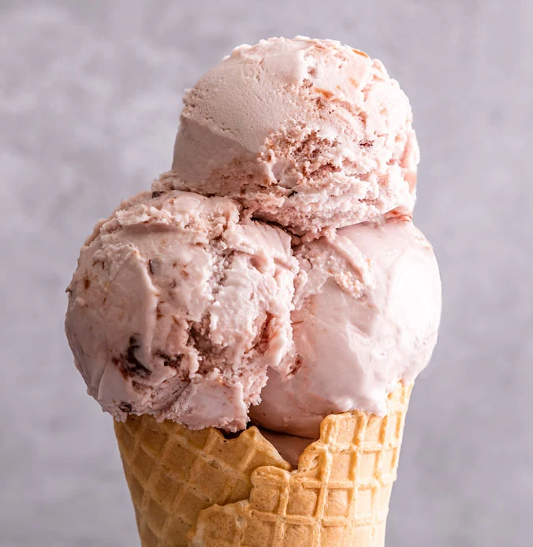

Luxury Lakes Ice Cream
Plum & Damson
A South Lakeland favourite: plum and damson fruits swirled through creamy dairy ice cream.
BrandLakes Ice Cream
AllergensContains MILK . May contain nuts. Made and packed where pistachios and almonds are handled.
Dietary informationVegetarian. Manufacturer states gluten free.
AwardsGreat Taste One Star Award 2023
AvailabilityPart of our in-store range. Flavours can change; ask us what is available today. My List is a pre-visit planner, not a reservation.
Allergies and intolerances: Recipes and supplier information can change. Check the current packaging and ask our staff about ingredients, allergens, cones and shared scooping equipment before ordering. Dietary statements below describe the manufacturer’s ice cream, not a complete serving.